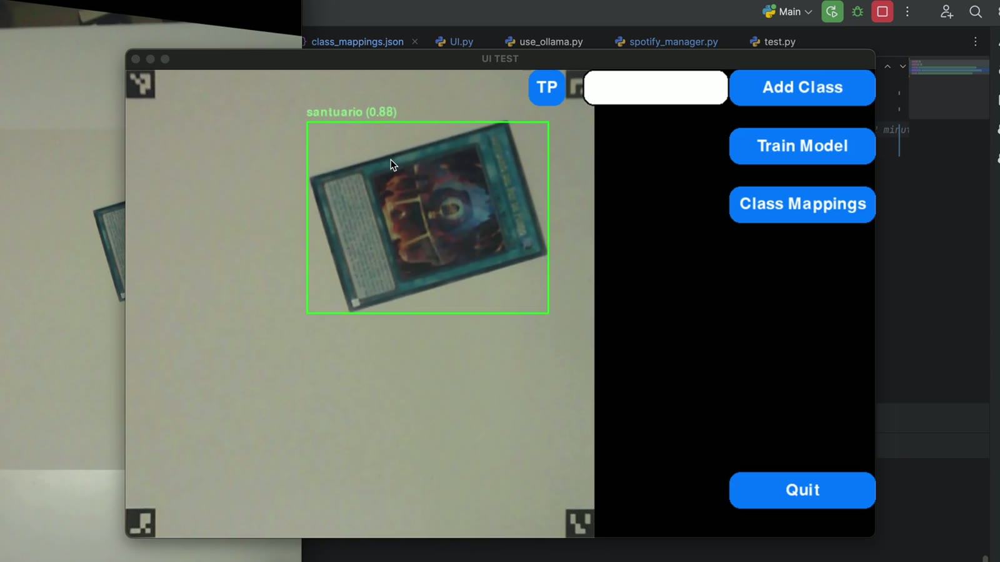
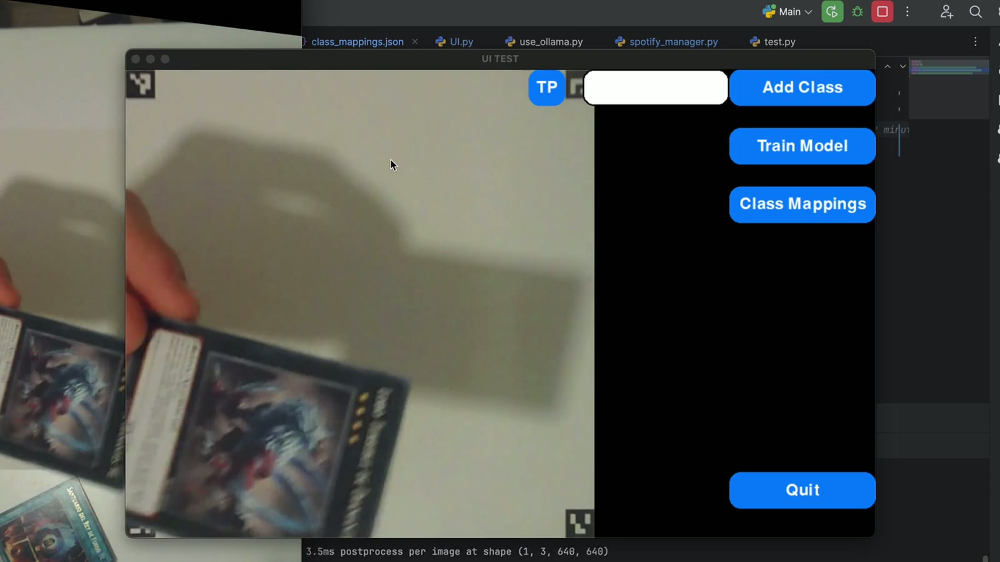
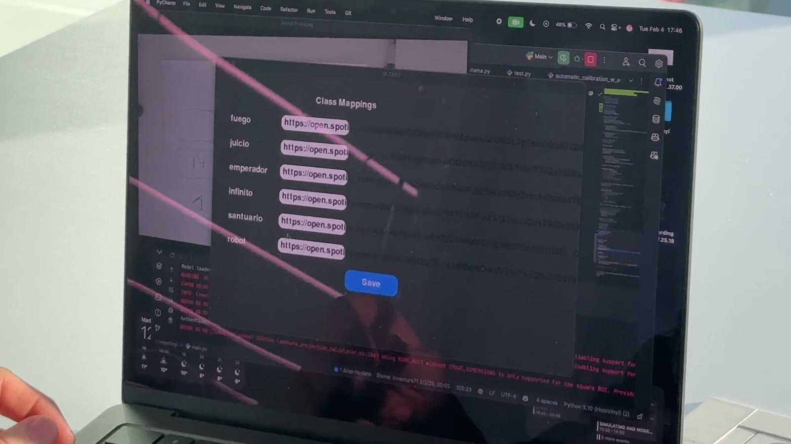

Signature gestures
Pinch, swipe, and hold combinations orchestrate deck actions while the UI mirrors hand rotation.
- Context-aware overlays fade in around active fingertips.
- Gesture cooldowns prevent accidental double triggers.
Python-native holographic console that turns gestures and tracked objects into living music controls.

Demo video
Session design
Rapidly iterates pinch, swipe, and hold combos with visual debug trails so new moves can be tuned in minutes.
Deck, loop, and effects layers snap together as modular scenes that respond to stage lighting and camera angle.
Runs on a single laptop and webcam, with calibration cues that coach performers through setup without a crew.
Interaction layers
Pinch, swipe, and hold combinations orchestrate deck actions while the UI mirrors hand rotation.
Landmark tracking pairs with YOLO detections so props like vinyl sleeves unlock extra controls.
Modular overlays draw directly on the video texture, rendering faders, meters, and tooltips around the performer.
HoloVinyl lets performers carry a single webcam and laptop yet still project a futuristic control surface that audiences can read and react to.
Flow
Webcam stream initializes, lighting is normalized, and gesture thresholds hydrate from config.
Hand landmarks and YOLO detections stream into a shared state store that translates poses into intents.
Dynamic buttons and vinyl widgets spawn, animate, and retire based on recognized gestures and detected props.
Mapped commands fire into the audio layer, logging interactions for future gesture analytics.
Gallery

